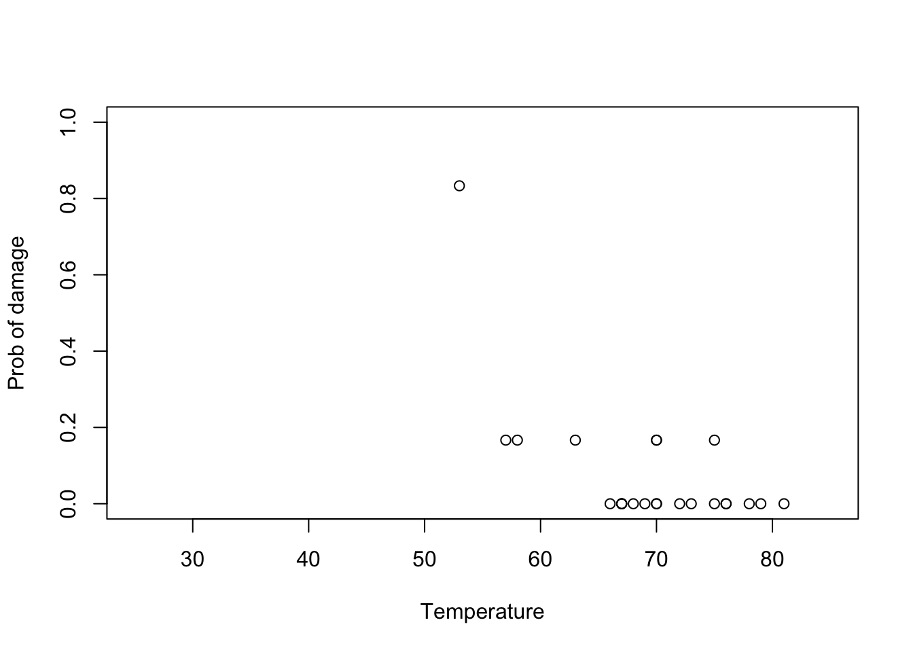
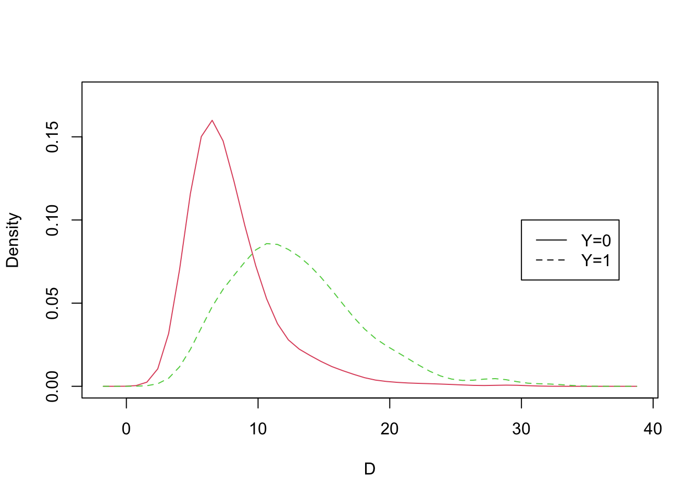
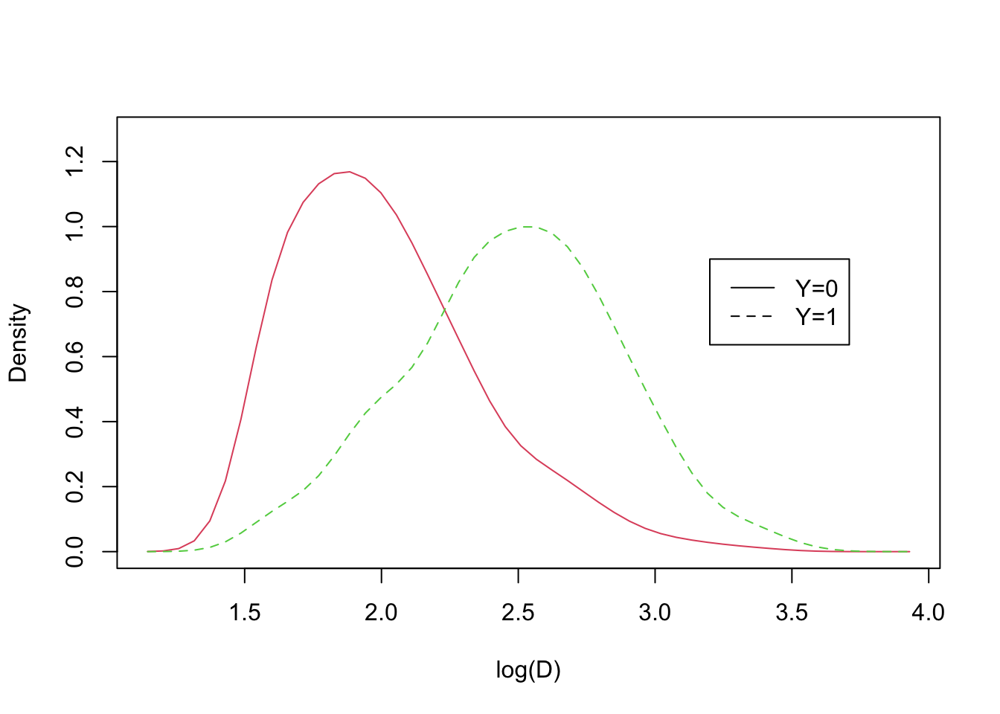
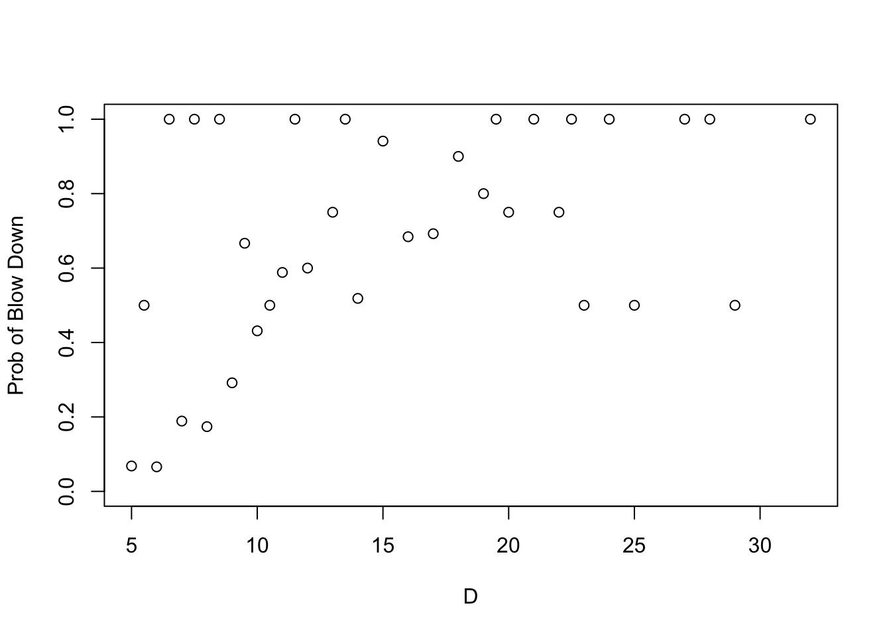
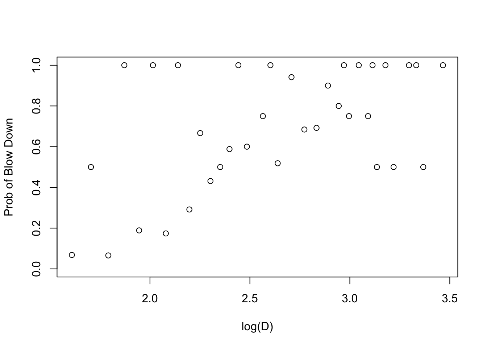
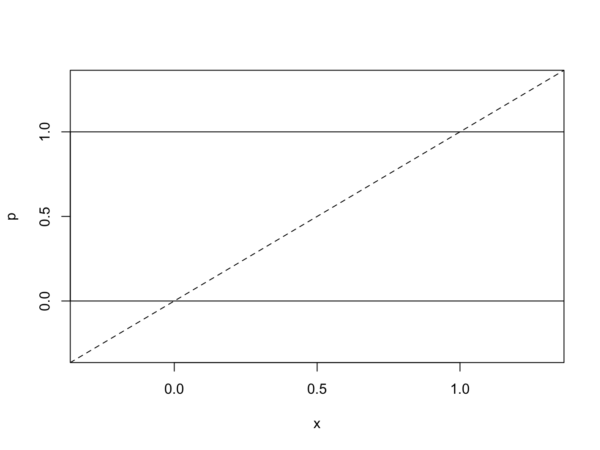
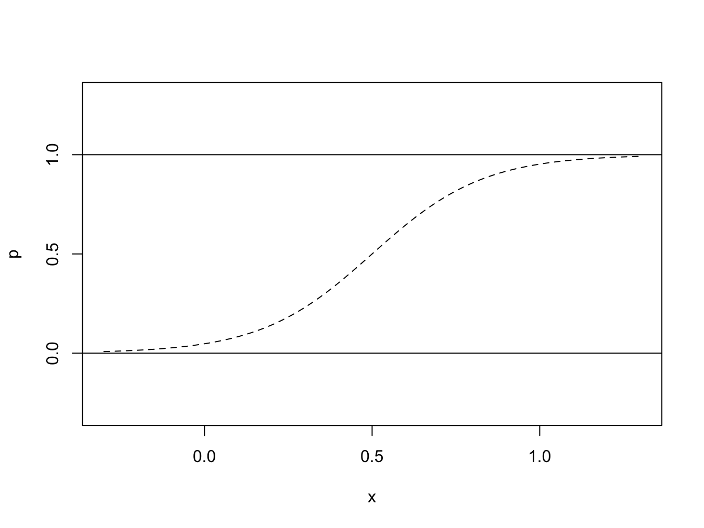
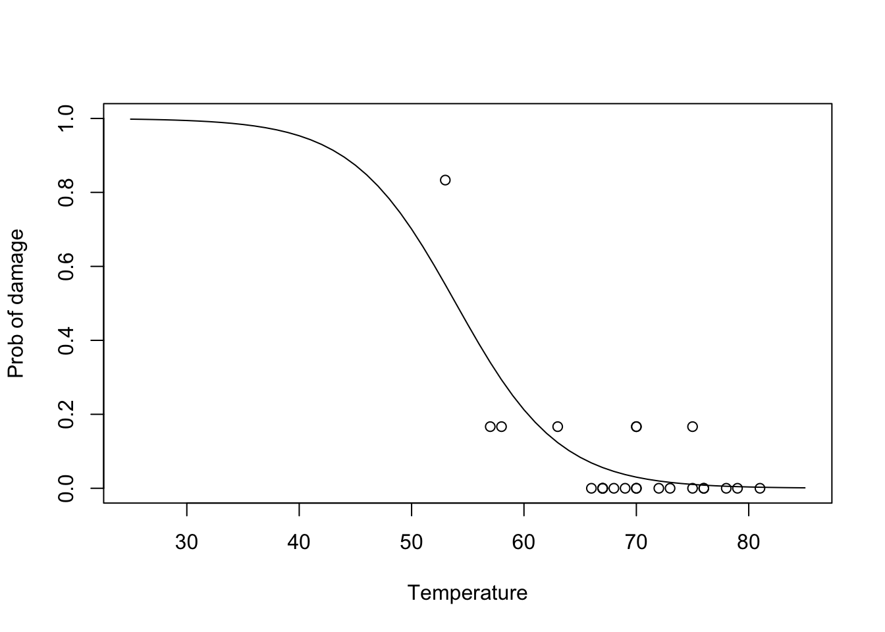
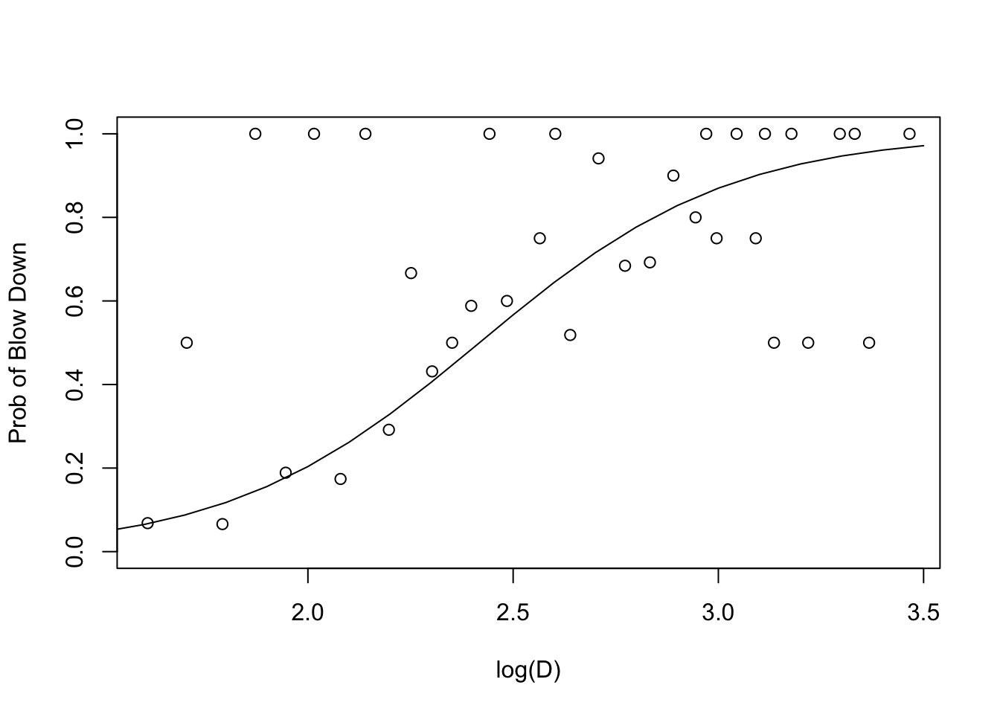

library(tidyverse)
library(ggplot2)
library(epiR)
library(faraway)
library(alr4)
library(sm)
library(MASS)
library(knitr)
library(kableExtra)5 로지스틱 회귀모형
5.1 필요한 패키지
5.2 이항변수: 예제
먼저 R을 이용한 로지스틱 회귀분석을 소개하기 위하여 다음의 예제를 이용하고자 한다.
5.2.1 챌린져호 O-ring 자료
1986년 미국우주항공국(NASA)이 발사한 우주왕복선 챌린져호(Spache Shuttle Challenger)가 로켓 엔진에 주요부품인 O-rings의 손상으로 인하여 공중에서 폭팔하는 사고가 일어났다. 다음 데이타는 미국우주항공국이 챌린져호를 발사하기 전에 실험을 통하여 얻은자료이다. 디음의 자료는 교과서의 R package faraway에서 orings에서 볼 수 있다.
#data(orings)
orings %>% kbl() %>%
kable_styling( full_width = F)| temp | damage |
|---|---|
| 53 | 5 |
| 57 | 1 |
| 58 | 1 |
| 63 | 1 |
| 66 | 0 |
| 67 | 0 |
| 67 | 0 |
| 67 | 0 |
| 68 | 0 |
| 69 | 0 |
| 70 | 1 |
| 70 | 0 |
| 70 | 1 |
| 70 | 0 |
| 72 | 0 |
| 73 | 0 |
| 75 | 0 |
| 75 | 1 |
| 76 | 0 |
| 76 | 0 |
| 78 | 0 |
| 79 | 0 |
| 81 | 0 |
위의 자료에서 temp는 실험에서 적용된 온도(화씨 F)이고 damage는 각 실험마다 6개의 링중에서 손상된 개수를 나타낸다. 참고로 1986년 챌린져호가 발사될 때의 온도는 31F 였다.
먼저 그림을 통하여 온도의 변화에 따른 손상비율을 살펴보자.
plot(damage/6 ~ temp, orings, xlim=c(25,85), ylim = c(0,1), xlab="Temperature", ylab="Prob of damage")
5.2.2 강풍에 의한 나무 피해 자료
1999년 미국 Misnnesota주의 Boundary Waters Canoe Area Wilderness (BWCAW)에서 심한 폭풍으로 생긴 강한 바람에 의해 쓰러진 나무들에 대한 자료를 수집하였다. 이 자료는 Weisberg (2014) (R package alr4) 에 수록된 자료이다.
연구의 목적은 폭풍이 나무의 생존에 미치는 영향을 알아보는 것이다. 666 그루의 나무들에 대하여 나무가 바람에 의해 쓰러저 죽었는지 여부, 나무의 종, 나무의 지름, 폭풍의 국지적인 강도에 대한 자료를 수집하였다.
d: Tree diameter, in cms: Proportion of basal area killed for the four species balsam fir, cedar, paper birch and blue spruse, a measure of local severity of the storm.spp: Tree species, a factor with 9 levelsy: 1 if the tree died, 0 if it survived
head(Blowdown) %>% kbl() %>%
kable_styling( full_width = F)| d | s | y | spp |
|---|---|---|---|
| 9 | 0.0217509 | 0 | balsam fir |
| 14 | 0.0217509 | 0 | balsam fir |
| 18 | 0.0217509 | 0 | balsam fir |
| 23 | 0.0217509 | 0 | balsam fir |
| 9 | 0.0217509 | 0 | balsam fir |
| 16 | 0.0217509 | 0 | balsam fir |
반응변수 \(y\) 를 쓰러진 나무는 \(y=1\)로하고 살아남은 나무를 \(y=0\)으로 코딩하였다. 나무의 상태 y에 나무의 지름 d이 미치는 영향을 살펴보려고 한다.
수집된 자료중에서 나무의 종류가 black spruce인 자료만를 분석하기로 한다. 아래 코드는 black spruce인 자료만를 모아서 데이터프레임 BlowBS_raw 를 만드는 것이다.
BlowBS_raw <- Blowdown %>% dplyr::filter(spp=='black spruce')
dim(BlowBS_raw)[1] 659 4head(BlowBS_raw) %>% kbl() %>%
kable_styling( full_width = F)| d | s | y | spp |
|---|---|---|---|
| 9 | 0.0242120 | 0 | black spruce |
| 11 | 0.0305947 | 0 | black spruce |
| 9 | 0.0305947 | 0 | black spruce |
| 9 | 0.0341815 | 0 | black spruce |
| 5 | 0.0341815 | 0 | black spruce |
| 8 | 0.0341815 | 0 | black spruce |
아래 그림은 쓰러진 나무와 살아남은 나무들의 지름의 분포를 비교한 것이다. 이를 통하여 지름이 큰 나무가 살아남을 확률이 더 커짐을 알수 있다.
sm.density.compare(BlowBS_raw$d, BlowBS_raw$y,lty=c(1,2), xlab="D")
legend(30,.1,legend=c("Y=0","Y=1"),lty=c(1,2))
sm.density.compare(log(BlowBS_raw$d), BlowBS_raw$y,lty=c(1,2), xlab="log(D)")
legend(3.2,.9,legend=c("Y=0","Y=1"),lty=c(1,2))
또한 R package alr4 에 수록된 데이터셋 BlowBS 는 위에서 본 O-rings 예제와 동일하게 black spruce인 자료만 모아서 전체 횟수와 성공의 횟수로 요약된 자료이다.
head(BlowBS) %>% kbl() %>%
kable_styling( full_width = F)| d | died | m |
|---|---|---|
| 5.0 | 6 | 88 |
| 5.5 | 1 | 2 |
| 6.0 | 6 | 91 |
| 6.5 | 1 | 1 |
| 7.0 | 17 | 90 |
| 7.5 | 1 | 1 |
d:Tree diameter, in cmdied: Number of trees of this value of d that died (blowdown)m: number of trees of this size class measured
이제 데이터셋 BlowBS 를 이용하여 나무의 지름과 나무 피해의 관계에 대해서 살펴보자.
plot( died/m~ d, BlowBS, ylim = c(0,1), xlab="D", ylab="Prob of Blow Down")
나무의 지름 \(d\)을 \(\log(d)\)로 변환하여 예측변수(predictor) \(x\)로 하려고 한다.
plot( died/m~ I(log(d)), BlowBS, ylim = c(0,1), xlab="log(D)", ylab="Prob of Blow Down")
나무의 상태 \(y\)는 두 가지의 반응 결과를 가지는 이항변수이고 그 평균 \(E(y)\)는 0과 1사이의 값을 가지는 확률이지만 나무의 지름 \(x=\log(D)\)는 연속형 변수이다.
이러한 경우에 회귀분석의 모형은 어떻게 세울까?에 대하여 생각해보자.
\[ 0 \le E(y|x) = p(x) \le 1, \quad \quad -\infty < \beta_0 + \beta_1 x < \infty \]
5.3 로지스틱 회귀모형
5.3.1 이항변수와 연결함수
일반적으로 지금까지 배워온 회귀분석의 확률 모형에서는 반응변수 \(y\)는 연속형 확률변수이다. 따라서 예측변수 \(x\)의 값과 반응변수의 관계를 다음과 같은 회귀식으로 설명한다.
\[ E(y|x) = \beta_0 + \beta_1 x \tag{5.1}\]
하지만 앞에서 살펴본 예제에서와 같이 반응변수의 값이 연속형 변수가 아니라 두 개의 가능한 결과만을 가지는 이항변수라면 위에서 주어진 회귀식은 적절하지 못하다.
\[ y = \begin{cases} 1 & \text{ with probabilty } p \\ 0 & \text{ with probabilty } 1-p \end{cases} \]
왜냐하면 반응변수의 기대값이 0과 1사이의 확률로 나타나기 때문이다.
\[ E(y|x) = 1\cdot P(y=1|x) + 0 \cdot P(y=0|x) = P(y=1|x) \]
따라서 반응변수의 기대값의 범위와 예측변수가 있는 선형예측식(linear predictor) \(\beta_0 + \beta_1 x\)의 범위가 일치하지 않아서 선형회귀식 식 5.1 을 그대로 사용할 수 없다.

위의 문제를 해결하기 위한 방법중의 하나는 다음과 같은 함수 \(m\)를 생각하여 변환된 선형예측식의 범위를 \([0,1]\)로 만드는 것이다.
\[ m:\Re \rightarrow [0,1] \quad \text{and } \quad m(x) \text{ is monotone function}. \]
따라서 다음과 같은 이항변수를 반응변수로 하는 새로운 회귀식을 만들 수있다.
\[ E(y|x) = m(\beta_0 + \beta_1 x) \tag{5.2}\]
주로 쓰이는 변환함수로 다음과 같은 로지스틱 함수(logistic function)가 있다.
\[ m(x) = \frac{ \exp(\beta_0 + \beta_1 x) }{ 1+ \exp(\beta_0 + \beta_1 x) } \tag{5.3}\]
반응변수가 베르누이 분포를 따를 때 위의 로지스틱홤수를 사용하는 회귀식을 로지스틱 회귀식이라고 한다.
\[ P(y=1|x) = \frac{ \exp(\beta_0 + \beta_1 x) }{ 1+ \exp(\beta_0 + \beta_1 x) } = \{ 1+ \exp[-(\beta_0 + \beta_1 x)] \}^{-1} \tag{5.4}\]
위의 로지스틱 회귀식을 다시 역으로 정리하면 다음과 같은 식을 얻을 수 있다.
\[ \log \left [ \frac{P(y=1|x)}{1-P(y=1|x)} \right ] = \log \frac{p(x)}{1-p(x)}=\beta_0 + \beta_1 x \tag{5.5}\]
식 식 5.5 에서 나타난 함수 \(g\),
\[ g(p)=\log \frac{p}{1-p} \]
를 로짓함수(logit function) 라고 부르며 이는 로지스틱 함수의 역함수로서 0과 1 사이의 값을 가지는 확률을 실수 전체로 변환하는 함수로서 선형 예측식의 범위와 일치하게 한다.

이렇게 관측값의 평균 (베르누이분포에서는 성공확률)과 선형예측식의 관계를 설정하는 함수를 연결함수(link function) 라고 하며 \(g\) 라고 표시한다.
\[ g[E(y|x)] = g[p(x)] = \log \frac{p(x)}{1-p(x)}=\beta_0 + \beta_1 x \tag{5.6}\]
따라서 로짓함수는 연결함수의 하나이며 다른 종류의 연결함수도 생각할 수 있다. 예를 들어 \(\Phi(x)=P(Z \le x)\)를 표준정규분포의 분포함수라 한다면 다음과 같은 연결함수를 생각할 수 있고 이를 probit 함수라고 부른다.
\[ g[p(x)] = \Phi^{-1}(p(x)) = \beta_0 + \beta_1 x \]
만약 예측변수가 하나가 아닌 \(p\)개라면, 즉 예측변수 \({\pmb x}=(x_1,x_2,\dots,x_{p})^t\) 에 대한 로지스틱 회귀모형은 다음과 같이 확장할 수 있다.
\[ \log \left [ \frac{P(y=1|x)}{1-P(y=1 | x)} \right ] = \pmb x^t \pmb \beta = \beta_0 + \beta_1 x_{1} + \beta_2 x_2 + \dots \beta_p x_{p} \]
5.3.2 예제
위의 o-ring 예제(섹션 5.2.1)에서 성공(\(y=1\))은 O-ring이 손상된 경우이며 주어진 온도 \(x\)에서의 손상확률을 \(p=(Y=1|x)=p(x)\)라고 하면 다음과 같은 로지스틱회귀식을 생각할 수 있다.
\[ \log \frac{p(x)}{1-p(x)}=\beta_0 + \beta_1 x \]
다음과 같은 함수 glm을 이용하여 위의 로지스틱 회귀식을 적합할 수 있다.
logit1 <- glm(cbind(damage,6-damage) ~ temp, family=binomial, orings)
summary(logit1)
Call:
glm(formula = cbind(damage, 6 - damage) ~ temp, family = binomial,
data = orings)
Coefficients:
Estimate Std. Error z value Pr(>|z|)
(Intercept) 11.66299 3.29626 3.538 0.000403 ***
temp -0.21623 0.05318 -4.066 4.78e-05 ***
---
Signif. codes: 0 '***' 0.001 '**' 0.01 '*' 0.05 '.' 0.1 ' ' 1
(Dispersion parameter for binomial family taken to be 1)
Null deviance: 38.898 on 22 degrees of freedom
Residual deviance: 16.912 on 21 degrees of freedom
AIC: 33.675
Number of Fisher Scoring iterations: 6coef(logit1)(Intercept) temp
11.6629897 -0.2162337 위의 결과에서 회귀식 기울기의 추정치는 \(\hat \beta=\) -0.2162337이다. 따라서 다음과 같은 회귀식을 얻을 수 있다.
\[ \log \frac{p(x)}{1-p(x)}=11.6629897+ (-0.2162337) x \] 위의 회귀식을 이용하여 추정된 고장확률을 그림으로 그려보면 다음과 같다.
여기서 ilogit은 로짓함수의 역함수를 계산해주며 다음과 같이 주어진 회귀식을 이용하여 확률을 계산한다.
\[ P(y=1|x) = \frac{ \exp(\beta_0 + \beta_1 x) }{ 1+ \exp(\beta_0 + \beta_1 x) } = \frac{1}{ 1+ \exp[-(11.6629897+ (-0.2162337) x)] }\]
plot(damage/6 ~ temp, orings, xlim=c(25,85), ylim = c(0,1), xlab="Temperature", ylab="Prob of damage")
x <- seq(25,85,1)
lines(x,ilogit(coef(logit1)[1]+coef(logit1)[2]*x))
또한 온도가 31F인 경우 고장확률의 추정값은 \(\hat p =\) 0.9930342이며 R 에서 다음과 같이 계산한다.
x <- 31
ilogit(coef(logit1)[1]+coef(logit1)[2]*x)(Intercept)
0.9930342 이제 강풍에 의한 나무의 피해에 대한 예제(섹션 5.2.2)에 대하여 로지스틱 회귀식을 적합해보자.나무의 상태 \(y\) 가 이항 변수이고 나무의 지름 \(x=\log(d)\)을 예측변수로 하는 로지스틱회귀 모형을 고려하고 추정해보면 다음과 같은 회귀식을 얻는다
logit2 <- glm(y~ I(log(d)),family=binomial(),data=BlowBS_raw)
summary(logit2)
Call:
glm(formula = y ~ I(log(d)), family = binomial(), data = BlowBS_raw)
Coefficients:
Estimate Std. Error z value Pr(>|z|)
(Intercept) -7.8925 0.6325 -12.48 <2e-16 ***
I(log(d)) 3.2643 0.2761 11.82 <2e-16 ***
---
Signif. codes: 0 '***' 0.001 '**' 0.01 '*' 0.05 '.' 0.1 ' ' 1
(Dispersion parameter for binomial family taken to be 1)
Null deviance: 856.21 on 658 degrees of freedom
Residual deviance: 655.24 on 657 degrees of freedom
AIC: 659.24
Number of Fisher Scoring iterations: 4\[ \log \left [ \frac{P(y=1|x)}{1-P(y=1|x)} \right ] =-7.892464+ (3.2642653) x \] 위의 회귀식을 이용하여 추정된 나무가 부러져서 피해를 입을 확률은 다음과 같다.
\[ P(y=1|x) = \frac{ \exp(\beta_0 + \beta_1 x) }{ 1+ \exp(\beta_0 + \beta_1 x) } = \frac{1}{ 1+ \exp[-(-7.892464+ (3.2642653) x)] }\] 이제 나무의 지름에 변화에 대하여 나무가 부러져서 피해를 입을 확률의 추정값을 그림으로 그려보자.
plot( died/m~ I(log(d)), BlowBS, ylim = c(0,1), xlab="log(D)", ylab="Prob of Blow Down")
x <- seq(0,3.5,0.1)
lines(x,ilogit(coef(logit2)[1]+coef(logit2)[2]*x))
5.3.3 회귀계수의 해석
일반적인 회귀분석의 모형 식 5.1 에서 계수 \(\beta_1\)은 기울기로서 예측변수 \(x\)의 단위가 1 증가할 때 반응변수의 평균이 \(\beta_1\)만큼 증가하는 것으로 해석할 수 있다. 하지만 로지스틱 회귀모형 식 5.4 에서는 이러한 해석을 할 수 없다.
로지스틱 회귀모형에서 기울기 \(\beta_1\)의 의미를 알아보기 위하여 예측변수 \(x\) 에 대한 베르누이 변수 \(y\)의 성공 확률 \(P(y=1|x)\)에 대한 오드(odd)를 정의하자.
\[ odd(x) = \frac{P(y=1|x)}{1-P(y=1|x)} \]
이제 단순 로지스틱 회귀식 식 5.5 을 생각하고 예측변수 \(x\)를 0과 1의 값을 가지는 이항변수로 가정한다.
\(x=1\) 인 경우는
\[ \frac{P(y=1|x=1)}{1-P(y=1|x=1)} = \exp( \beta_0 + \beta_1) \]
이며 \(x=0\) 인 경우는
\[ \frac{P(y=1|x=0)}{1-P(y=1|x=0)} = \exp(\beta_0) \]
위에서 주어진 두 개의 오드, 즉 \(x=1\)인 경우와 \(x=0\)인 경우의 두 오드의 비(odd ratio)를 구하면 다음과 같다.
\[ \frac{ \frac{P(y=1|x=1)}{1-P(y=1|x=1)} } {\frac{P(y=1|x=0)}{1-P(y=1|x=0)}} = \exp (\beta_1) \]
이는 다시 쓰면
\[ \frac{P(y=1|x=1)}{1-P(y=1|x=1)} = \exp (\beta_1) \frac{P(y=1|x=0)}{1-P(y=1|x=0)} \]
위의 식에서 볼 떄 예측변수 \(x\)가 1 의 값을 가질 때 반응 변수의 오드가 예측변수 \(x\)가 0일 경우의 오드의 \(\exp (\beta_1)\)배로 변하는 것을 알 수 있다.
따라서 \(\exp (\beta_1)\)는 반응변수의 오드의 증가량으로 볼 수 있다. 이는 두 성공확률의 오즈비가 \(\exp (\beta_1)\)을 말한다. 위의 식에 로그를 취하면 다음과 같은 관계를 얻는다.
\[ \log \left [ \frac{P(y=1|x=1)}{1-P(y=1|x=1)} / \frac{P(y=1|x=0)}{1-P(y=1|x=0)} \right ] = \beta_1 \]
즉 오즈비의 로그값이 단순 로지스틱 회귀식에서 기울기 \(\beta_1\)으로 나타난다.
간단한 예제를 통하여 오즈비와 로지스틱 회귀의 기울기의 관계를 명확히 해보자. 100명의 사람들을 55세 이상의 사람(\(x=1\))과 55세 미만의 사람(\(x=0\))의 그룹으로 나누었을 떄 각 그룹에서 만성심장질환(CHD)가 있는 사람(\(y=1\))과 없는 사람(\(y=0\))의 수가 표 표 5.1 에 주어져있다.
| CHD/나이 | 나이 \(\ge 55\) (\(x=1\)) | 나이 \(< 55\) (\(x=0\)) | 합계 |
|---|---|---|---|
| CHD 있음 \(y=1\) | 21 | 22 | 43 |
| CHD 없음 \(y=0\) | 6 | 51 | 57 |
| 합계 | 27 | 73 | 100 |
여기서 나이에 대한 CHD 유무의 오즈비는 다음과 같이 계산된다.
\[ \text{Odds Ratio } = \frac{ \tfrac{21/27}{6/27}}{ \tfrac{22/73}{51/73}} = \frac{(21)(51)}{(6)(22)} = 8.11 \]
위의 표 표 5.1 의 자료를 이용하여 로지스틱회귀를 적합시키면 결과가 아래와 같고 회귀계수 \(\beta_1\)의 추정값은 오즈비의 로그값임을 알 수 있다.
\[ \hat \beta_1 = \log (8.11) = 2.094 \]
표 표 5.1 의 자료에 대하여 로지스틱 회귀모형은 다음과 같이 적합할 수 있다.
yes <- c(21,22)
no <- c(6,51)
x <- c (1,0)
m1 <- glm( cbind(yes,no) ~ x, family=binomial() )
summary(m1)
Call:
glm(formula = cbind(yes, no) ~ x, family = binomial())
Coefficients:
Estimate Std. Error z value Pr(>|z|)
(Intercept) -0.8408 0.2551 -3.296 0.00098 ***
x 2.0935 0.5285 3.961 7.46e-05 ***
---
Signif. codes: 0 '***' 0.001 '**' 0.01 '*' 0.05 '.' 0.1 ' ' 1
(Dispersion parameter for binomial family taken to be 1)
Null deviance: 1.8704e+01 on 1 degrees of freedom
Residual deviance: 1.4211e-14 on 0 degrees of freedom
AIC: 11.987
Number of Fisher Scoring iterations: 35.4 추정과 검정
5.4.1 이항분포와 가능도 함수
주어진 예측변수 \(x_i\)에서 실행횟수가 \(m_i\)인 이항분포\(B(m_i, p(x_i))\)를 생각하자. \(m_i\)의 시행 중에 성공의 횟수가 \(y_i\)라고 하면 \(y_i\)의 확률밀도함수는 다음과 같다.
\[ {{m_i}\choose{y_i}} {p(x_i)}^{y_i} [(1-p(x_i)]^{m_i-y_i} \]
그리고 \(y_i\)의 평균과 분산은 다음과 같다.
\[ E(y_i | x_i ) = m_i p(x_i), \quad \quad Var(y_i | x_i) = m_i p(x_i) [1-p(x_i)] , \quad i=1,2,\dots,n \]
이항분포를 위한 로지스틱 회귀방정식은 선형예측식과 성공의 확률의 관계를 다음과 같이 정한다.
\[ \log \left [ \frac{p(x_i)}{1-p(x_i)} \right ] = \beta_0 + \beta_1 x_{i} \]
서로 독립인 관측값 \((y_1,y_2,\dots,y_n)\)의 가능도함수(likelihood function) \(L\)은 이항분포들의 결합확률밀도함수와 같고 아래와 같이 주어지며
\[ L = \prod_{i=1}^n f(y_i|p(x_i)) = \prod_{i=1}^n \left [ {{m_i}\choose{y_i}} \right] {p(x_i)}^y_i {(1-p(x_i))}^{m-y_i} \]
로그가능도함수(log likelihood function) \(l\) 은 다음과 같이 나타낼 수 있다.
\[\begin{align} l & = \log L \\ & = \sum_i \log {{m_i}\choose{y_i}} + \sum_i y_i \log p(x_i) + \sum_i (m_i -y_i) \log [1-p(x_i)] \notag \\ & = c(\pmb y,\pmb m) + \sum_i y_i \log \left [ \frac{p(x_i)}{1-p(x_i)} \right ] + \sum_i m_i \log [1-p(x_i)] \end{align}\]
결론적으로
\[ l(\pmb \mu|\pmb y) = \log L(\pmb \mu|\pmb y) = c(\pmb y,\pmb m) + \sum_i y_i \log \left [ \frac{p(x_i)}{1-p(x_i)} \right ] + \sum_i m_i \log [1-p(x_i)] \tag{5.7}\]
위의 로그가능도함수에서 볼 수 있듯이 충분통계량인 성공의 횟수 \(y_i\)와 곱으로 나타내어진 함수가 로짓함수이며 이렇게 가능도함수에서 얻어진 결합함수를 자연 연결함수(natural link function)이라고 한다.
회귀계수의 추정량은 최대가능도 추정법을 이용하여 구할 수 있으며 로그 가능도 함수가 회귀계수에 대하여 비선형이므로 반복을 이용한 계산법에 의하여 추정량을 얻을 수 있다.
\[ \max_{\pmb \beta } \log L = \max_{\pmb \beta } \sum_i y_i \log \left [ \frac{p(x_i)}{1-p(x_i)} \right ] + \sum_i m_i \log [1-p(x_i)] \]
5.4.2 편차
선형모형에서 잔차제곱합(residual sum of square; SSE)에 대한 의미를 살펴보고 이를 일반화 선형모형에 확장하는 개념인 편차(deviance)의 정의를 알아보자.
먼저 다음과 같은 선형회귀식을 고려한다.
\[ y_i = \beta_0 + \beta_1 x_{1i} + \beta_2 x_{2i} + \dots \beta_p x_{pi} + e_i , \quad i=1,2,\dots,n \]
여기서 오차항 \(e_i\)를 서로 독립이며 평균이 0이고 분산이 \(\sigma^2\)인 정규분포를 따른다고 가정하고 (\(\sigma^2\)는 알고있다고 가정하자) 각 관측변수의 평균을 다음과 같이 \(\mu_i\)로 하자.
\[ \mu_i =E(y_i|x_i)= \beta_0 + \beta_1 x_{1i} + \beta_2 x_{2i} + \dots +\beta_p x_{pi} \]
서로 독립인 관측변수 \(y_i\)의 분포는 정규분포를 따르므로
\[ y_i \sim N(\mu_i,\sigma^2) \]
관측치 \(\pmb y=(y_1,y_2,\dots,y_n)^t\)의 로그가능도함수는 다음과 같이 나타낼 수 있다.
\[ l(\pmb \mu|\pmb y) = C -\frac{n}{2} \log \sigma^2 -\frac{1}{2\sigma^2} \sum_{i=1}^n (y_i - \mu_i)^2 \]
예측변수 \(x_1,x_2,\dots,x_p\)를 고려한 선형회귀모형에서 각 반응변수 평균의 예측식은 다음과 같다.
\[ \hat \mu_i = \hat \beta_0 + \hat \beta_1 x_{1i} + \hat \beta_2 x_{2i} + \dots +\hat \beta_p x_{pi} \equiv \hat y_i \]
이 때 선형회귀모형의 로그가능도함수의 최대값는 다음과 같다.
\[\begin{align*} l(\hat{\pmb \mu}|\pmb y) & = l_{regession}(\hat {\pmb \beta}|y) \\ & = C -\frac{n}{2} \log \sigma^2 -\frac{1}{2\sigma^2} \sum_{i=1}^n (y_i - \hat \mu_i)^2 \\ &= C -\frac{n}{2} \log \sigma^2 -\frac{1}{2\sigma^2} \sum_{i=1}^n (y_i - \hat y_i)^2 \\ &= C -\frac{n}{2} \log \sigma^2 -\frac{1}{2\sigma^2} SSE \end{align*}\]
이제 위의 선형회귀모형에서 예측변수 \(x_1,x_2,\dots,x_p\)를 고려하지 않는 포화 모형을 생각해보자.
\[ y_i = \beta_{0i} +e_i \quad \text{or} \quad E(y_i) = \beta_{0i} \]
이러한 포화 모형은 \(n\)개의 반응변수의 평균을 \(n\)개의 모수를 가진 모형으로 추정하는 것으로 위와 같은 모형을 포화 모형(saturated model)이라고 한다. 포화 모형에서 모수 \(\beta_{0i}\)의 최소제곱 추정량(또는 최대가능도 추정량)는 관측값 \(y_i\)임을 쉽게 알수 있다.
\[ \min_{\beta_{0i}} \sum_{i=1}^n (y_i -\beta_{0i})^2 \quad \Rightarrow \hat \beta_{0i} = y_i, \quad i=1,2,\dots,n \]
포화 모형의 의미는 우리가 생각할 수 있는 모형 중에 가장 큰 모형으로 포화모형보다 큰 모형을 생각할 수 없다. 위에서 언급한 바와 같이 \(n\)개의 관측값에 대하여 모수의 수가 \(n\)개보다 큰 모형을 생각하면 유일한 모수의 추정이 불가능하다.
선형회귀모형에서 포화모형은 \(\hat \beta_{0i}=y_i\)이며 로그가능도함수의 최대값은 \(l(\pmb y | \pmb y)\)로 표시하며 다음과 같다.
\[\begin{align*} l(\pmb y | \pmb y) & = l_{saturated}(\hat {\pmb \beta_{0}} | y) \\ & = C -\frac{n}{2} \log \sigma^2 -\frac{1}{2\sigma^2} \sum_{i=1}^n (y_i - \hat \beta_{0i})^2 \\ &= C -\frac{n}{2} \log \sigma^2 -\frac{1}{2\sigma^2} \sum_{i=1}^n (y_i - y_i)^2 \\ &= C -\frac{n}{2} \log \sigma^2 + 0 \end{align*}\]
포화모형은 설정할 수 있는 최대의 모수를 가진 가장 큰 모형이므로 우리가 생각할 수 있는 모형 중에서 관측값을 예측하는 예측력은 가장 좋다는 것을 알 수 있다(하지만 과적합모형이다).
따라서 예측변수 \(\pmb x\)들을 사용하는 선형회귀모형의 예측력이 포화모형이 가지는 예측력에 가까우면 좋은 모형이라고 생각할 수 있다. 반응변수의 평균을 예측하는 예측력은 로그가능도함수의 크기로서 나타낼 수 있다. 포화모형과 선형회귀모형의 로그가능도함수를 비교하면 포화모형의 로그가능도함수가 크다는 것을 알수 있고 (why?) 두 로그가능도함수의 의 차이를 비교하면 다음과 같다.
\[ l(\pmb y | \pmb y) - l(\hat {\pmb \mu} | \pmb y) = l_{saturated}(\hat {\pmb \beta_{0}} | y) -l_{regession}(\hat {\pmb \beta}|y) = \frac{1}{2\sigma^2} \sum_{i=1}^n (y_i - \hat y_i)^2 = \frac{1}{2\sigma^2} SSE \]
위의 식을 가능도 함수의 비율로 다음과 같이 나타낼 수 있다.
\[ 2 \log \frac{L_{saturated}}{L_{regession}} = \frac{1}{\sigma^2} \sum_{i=1}^n (y_i - \hat y_i)^2 = \frac{1}{\sigma^2} SSE \]
따라서 포화모형과 로그가능도함수의의 차이가 작다는 것은 선형회귀모형의 잔차제곱합(SSE)이 작다는 것을 의미한다. 보통 잔차제곱합이 작으면 선형회귀모형의 예측력이 좋은 모형이며 이는 선형회귀모형의 가능도함수가 포화모형의 가능도함수에 가깝다는 의미이다.
이렇게 모형의 예측능력을 평가하는 측도로서 편차(deviance)를 포화모형과 고려한 회귀모형의 로그가능도함수의 차이에 2를 곱한 양으로 정의한다. 따라서 편차는 작을 수록 좋다.
\[ deviance \equiv D(\pmb y;\hat {\pmb \mu}) = 2 \left [ l(\pmb y | \pmb y) - l(\hat {\pmb \mu} | \pmb y) \right ] = 2 \log \frac{L_{saturated}}{L_{regession}} \tag{5.8}\]
정규분포인 경우 편차는 다음과 같이 주어진다.
\[ D(\pmb y;\hat {\pmb \mu}) = 2 \left [ l(\pmb y | \pmb y) - l(\hat {\pmb \mu} | \pmb y) \right ] = \frac{1}{\sigma^2} SSE \]
이제 이항분포들에서 나온 관측값에 대한 포화모형을 생각해 보자.
\[ y_i \sim B(m_i, p_i(x_i)), \quad i=1,2,\dots,n \]
위의 모형에서 포화모형은 어떤 모형일까? 포화모형은 \(n\)개의 관측변수의 평균, 여기서 \(E(y_i/m_i) = p(\pmb x_i)\)를 \(n\)개의 관측치 \(y_i\)를 이용하여 추정한 모형으로서 각 성공확률은 해당하는 관측된 성공의 비율에 의해 추정된다. 즉,
\[ \hat p(x_i) = \frac{y_i}{m_i} \]
이러한 경우의 로그가능도함수의 값은 다음과 같이 주어진다.
\[\begin{align*} l(\pmb y | \pmb y) & =l_{saturated} \\ & = \sum_i \log {{m_i}\choose{y_i}} + \sum_i y_i \log \hat p(x_i) + \sum_i (m_i -y_i) \log (1- \hat p(x_i)) \\ & = \sum_i \log {{m_i}\choose{y_i}} + \sum_i y_i \log \frac{y_i}{m_i} + \sum_i (m_i -y_i) \log (1- \frac{y_i}{m_i}) \end{align*}\]
따라서 위에서 주어진 포화함수의 로그가능도함수에서 로지스틱회귀식의 로그가능도함수 식 5.7 를 빼고 2를 곱해서 편차를 정의할 수 있다.
\[\begin{align*} D(\pmb y;\hat {\pmb \mu}) &= 2 \left [ l(\pmb y | \pmb y) - l(\hat {\pmb \mu} | \pmb y) \right ] \\ &= 2 ( l_{saturated}-l_{regession}) \\ & = 2 \left [\sum_i y_i \log \frac{y_i}{m_i} + \sum_i (m_i -y_i) \log (1- \frac{y_i}{m_i}) -\sum_i y_i \log \hat p(x_i) - \sum_i (m_i -y_i) \log (1-\hat p(x_i)) \right ]\\ & = 2\left [\sum_i y_i \log \frac{y_i}{m_i \hat p(x_i) } + \sum_i (m_i -y_i) \log \frac{1-y_i/m_i}{1-\hat p(x_i)}\right ] \\ & = 2\left [\sum_i y_i \log \frac{y_i}{m_i \hat p(x_i) } + \sum_i (m_i -y_i) \log \frac{m_i-y_i}{m_i- m_i \hat p(x_i)} \right ] \\ & = 2\left [\sum_i y_i \log \frac{y_i}{\hat y_i } + \sum_i (m_i -y_i) \log \frac{m_i-y_i}{m_i- \hat y_i } \right ]\\ \end{align*}\]
위에서 \(\hat y_i = m_i \hat p(x_i)\)으로 로지스틱 회귀에서 성공의 횟수의 평균에 대한 예측값이다.
위의 논의에서 알 수 있듯이 로지스틱 회귀에서의 편차는 선형회귀 분석에서 잔차 제곱합 SSE의 의미로 해석할 수 있으며 작을 수록 모형의 예측력이 좋다는 것을 알 수 있다.
편차의 점근적 분포
편차는 표본의 개수 \(m_i\)가 충분히 크고 회귀식이 옳다는 가정 하에서 자유도가 \(n-p\) 인 카이제곱분포를 따른다. 여기서 \(p\)는 회귀계수 벡터 \(\pmb \beta\)의 크기이다.
\[ D(\pmb y;\hat {\pmb \mu}) \sim \chi^2_{n-p} \]
여기서 \(n= \sum_i m_i\) 이고 \(p\) 는 회귀계수의 갯수이다.
정규분포와 이항분포의 편차를 비교하면 정규분포의 편차에는 산포를 나타내는 모수 \(\sigma^2\) 이 포함되어 있지만 이항분포의 편차에는 다른 모수가 나타나지 않는다. 식 식 5.8 에서 주어진 편차를 척도 모수(scaled parameter) 또는 산포 모수(dispersion parameter) \(\phi\) 를 곱해준 값을 척도화 편차(scaled deviance) \(D^*(\pmb y;\hat {\pmb \mu})\) 라고 부른다.
\[ D^*(\pmb y;\hat {\pmb \mu}) = \phi D(\pmb y;\hat {\pmb \mu}) \tag{5.9}\]
정규분포에서 산포 모수가 분산 \(\phi=\sigma^2\) 이므로 척도화 편차는 잔차제곱합 \(D^*(\pmb y;\hat {\pmb \mu}) = SSE\) 가 되며 이항분포에서는 편차와 척도화 편차가 같다.
이제 다시 o-ring 의 예제(섹션 5.2.1)에 대한 로지스틱 회귀식의ㅣ 결과를 보자.
summary(logit1)
Call:
glm(formula = cbind(damage, 6 - damage) ~ temp, family = binomial,
data = orings)
Coefficients:
Estimate Std. Error z value Pr(>|z|)
(Intercept) 11.66299 3.29626 3.538 0.000403 ***
temp -0.21623 0.05318 -4.066 4.78e-05 ***
---
Signif. codes: 0 '***' 0.001 '**' 0.01 '*' 0.05 '.' 0.1 ' ' 1
(Dispersion parameter for binomial family taken to be 1)
Null deviance: 38.898 on 22 degrees of freedom
Residual deviance: 16.912 on 21 degrees of freedom
AIC: 33.675
Number of Fisher Scoring iterations: 6마지막에 Residual deviance 는 다음과 같이 절편과 하나의 예측 변수(온도)를 포함한 회귀식에 대한 편차의 값과 자유도를 나타내는 것이다.
\[ \log \left [ \frac{P(y=1|x)}{1-P(y=1|x)} \right ] =\beta_0 + \beta_1 x \quad \rightarrow D(\pmb y;\hat {\pmb \mu}) = 16.9122785 \]
deviance(logit1)[1] 16.91228df.residual(logit1)[1] 21위에서 언급하였듯이 모형이 옪다는 가정하에서 편차 \(D(\pmb y;\hat {\pmb \mu})\) 는 자유도가 21 인 \(\chi^2\)-분포를 따르므로 아래에서 구한 \(P(\chi^2 \ge 16.9122785 )\) 가 크게 나오는 것은 모형이 적절하다는 의미이다.
pchisq(deviance(logit1), df.residual(logit1),lower=FALSE)[1] 0.7164099또한 Null deviance 는 다음과 같이 절편만 포함한 회귀식에 대한 편차의 값과 자유도를 나타내는 것이다.
\[ \log \left [ \frac{P(y=1|x)}{1-P(y=1|x)} \right ] =\beta_0 \]
5.4.3 검정과 모형의 선택
로지스틱 회귀모형에서 하나의 회귀 계수가 유의한 지에 대한 다음 검정은
\[ H_0 : \beta_i =0 \quad vs. \quad H_1: \beta_i \ne 0 \] 다음과 같은 표준화된 통계량을 이용하여 정규분포 검정을적용할 수 있다.
\[ z = \frac{ \hat \beta_i}{SE(\hat \beta_i)} \] 또한 회귀 계수 \(\beta_i\) 에 대한 \((1-\alpha)100\%\) 신뢰구간은 다음과 같이 구할 수 있다.
\[ [ \hat \beta_i - z_{\alpha/2 } SE(\hat \beta_i) , `` \hat \beta_i + z_{\alpha/2 } SE(\hat \beta_i) ] \]
위의 o-ring 예제(섹션 5.2.1)에서 온도에 대한 회귀 계수의 \(95\%\) 신뢰구간은 다음과 같이 MASS 패키지의 함수 confint를 이용해서 구한다.
confint(logit1)Waiting for profiling to be done... 2.5 % 97.5 %
(Intercept) 5.575195 18.737598
temp -0.332657 -0.120179이제 회귀모형에서 고려하는 다음과 같은 가설 검정을 고려해 보자.
\[ H_0 : \text{ reduced model} \quad vs. \quad H_1: \text{full model} \tag{5.10}\]
로지스틱 회귀에서 편차(deviance)의 차이를 이용하여 두 개의 모형 중 하나를 선택하는 방법을 살펴보자.
다음과 같이 서로 다른 모형과 그에 대한 가설을 생각해 보자. \[ H_0: g[p(x)] = {\pmb x}_1^t {\pmb \beta}_1 \quad \text{vs.} \quad H_1: g[p(x)] = {\pmb x_1}^t {\pmb \beta}_1+ {\pmb x}_2^t {\pmb \beta}_2 \]
가설을 달리 표현하면 다음과 같이 쓸 수 있다.
\[ H_0: {\pmb \beta}_2 =0 \quad \text{vs.} \quad H_1: {\pmb \beta}_2 \ne 0 \] 위의 가설에서 \(dim(\pmb \beta_1) = p\), \(dim(\pmb \beta_2) = q\) 라고 하면 대립가설 \(H_1\)의 모형이 귀무가설 \(H_0\)의 모형보다 큰 모형이다.
만약 축소모형(reduced moldel, \(H_0\))에 대한 잔차 편차(Residual Deviance)를 \(D_0\) 라고 하고 큰 모형(full model, \(H_1\))에 대한 잔차 편차를 \(D_1\) 라고 하면 귀무가설이 참인 경우 두 편차의 차이 \(D_0 - D_1\) 은 근사적으로 자유도가 \(q\) 인 카이제곱분포를 따른다. 여기서 자유도 \(q\) 는 두 모형의 회귀계수의 갯수 차이 $(p+q)-p=q이다. 이러한 두 편차의 차이의 점근적 분포 가능도비검정 이론에 의하여 유도할 수 있다.
\[ D= D_0 - D_1 \]
두 모형에 대한 모수의 개수의 차이 \(q\)인 경우 귀무가설이 참일 때 deviance의 차인 \(D= D_0 - D_1\) 통계량은 자유도가 \(q\)인 \(\chi^2\)-분포를 따른다. 따라서 유의수준 \(\alpha\)에서 \(D\) 통계량이 \(\chi^2_\alpha(q)\)보다 크면 귀무가설을 기각한다.
편차 차이를 이용하여 검정하는방법은 가능도비 검정(likelihood ratio test)과 동일한 검정이다.
다음 자료는27명의 암환자들에 대한 암의 호전(remission of cancer)이며 종속변수 \(y\)는 remiss로 1이면 암이 호전되었다는 표시이다. 나머지 6개의 변수는 환자의 특성을 나타내는 독립변수이다.
cancer <- read.table("remission.txt",header=T, sep="")
cancer %>% kbl() %>%
kable_styling( full_width = F)| id | remiss | cell | smear | infil | li | blast | temp |
|---|---|---|---|---|---|---|---|
| 1 | 1 | 0.80 | 0.83 | 0.66 | 1.9 | 1.100 | 0.996 |
| 2 | 1 | 0.90 | 0.36 | 0.32 | 1.4 | 0.740 | 0.992 |
| 3 | 0 | 0.80 | 0.88 | 0.70 | 0.8 | 0.176 | 0.982 |
| 4 | 0 | 1.00 | 0.87 | 0.87 | 0.7 | 1.053 | 0.986 |
| 5 | 1 | 0.90 | 0.75 | 0.68 | 1.3 | 0.519 | 0.980 |
| 6 | 0 | 1.00 | 0.65 | 0.65 | 0.6 | 0.519 | 0.982 |
| 7 | 1 | 0.95 | 0.97 | 0.92 | 1.0 | 1.230 | 0.992 |
| 8 | 0 | 0.95 | 0.87 | 0.83 | 1.9 | 1.354 | 1.020 |
| 9 | 0 | 1.00 | 0.45 | 0.45 | 0.8 | 0.322 | 0.999 |
| 10 | 0 | 0.95 | 0.36 | 0.34 | 0.5 | 0.000 | 1.038 |
| 11 | 0 | 0.85 | 0.39 | 0.33 | 0.7 | 0.279 | 0.988 |
| 12 | 0 | 0.70 | 0.76 | 0.53 | 1.2 | 0.146 | 0.982 |
| 13 | 0 | 0.80 | 0.46 | 0.37 | 0.4 | 0.380 | 1.006 |
| 14 | 0 | 0.20 | 0.39 | 0.08 | 0.8 | 0.114 | 0.990 |
| 15 | 0 | 1.00 | 0.90 | 0.90 | 1.1 | 1.037 | 0.990 |
| 16 | 1 | 1.00 | 0.84 | 0.84 | 1.9 | 2.064 | 1.020 |
| 17 | 0 | 0.65 | 0.42 | 0.27 | 0.5 | 0.114 | 1.014 |
| 18 | 0 | 1.00 | 0.75 | 0.75 | 1.0 | 1.322 | 1.004 |
| 19 | 0 | 0.50 | 0.44 | 0.22 | 0.6 | 0.114 | 0.990 |
| 20 | 1 | 1.00 | 0.63 | 0.63 | 1.1 | 1.072 | 0.986 |
| 21 | 0 | 1.00 | 0.33 | 0.33 | 0.4 | 0.176 | 1.010 |
| 22 | 0 | 0.90 | 0.93 | 0.84 | 0.6 | 1.591 | 1.020 |
| 23 | 1 | 1.00 | 0.58 | 0.58 | 1.0 | 0.531 | 1.002 |
| 24 | 0 | 0.95 | 0.32 | 0.30 | 1.6 | 0.886 | 0.988 |
| 25 | 1 | 1.00 | 0.60 | 0.60 | 1.7 | 0.964 | 0.990 |
| 26 | 1 | 1.00 | 0.69 | 0.69 | 0.9 | 0.398 | 0.986 |
| 27 | 0 | 1.00 | 0.73 | 0.73 | 0.7 | 0.398 | 0.986 |
다음은 6개의 독립변수를 모두 적합한 완전모형(full model)의 추정 결과이다.
logit3_L <- glm(remiss~cell + smear + infil + li + blast + temp,family=binomial,data=cancer)
summary(logit3_L)
Call:
glm(formula = remiss ~ cell + smear + infil + li + blast + temp,
family = binomial, data = cancer)
Coefficients:
Estimate Std. Error z value Pr(>|z|)
(Intercept) 58.0385 71.2364 0.815 0.4152
cell 24.6615 47.8377 0.516 0.6062
smear 19.2936 57.9500 0.333 0.7392
infil -19.6013 61.6815 -0.318 0.7507
li 3.8960 2.3371 1.667 0.0955 .
blast 0.1511 2.2786 0.066 0.9471
temp -87.4339 67.5735 -1.294 0.1957
---
Signif. codes: 0 '***' 0.001 '**' 0.01 '*' 0.05 '.' 0.1 ' ' 1
(Dispersion parameter for binomial family taken to be 1)
Null deviance: 34.372 on 26 degrees of freedom
Residual deviance: 21.751 on 20 degrees of freedom
AIC: 35.751
Number of Fisher Scoring iterations: 8위의 회귀분석 결과를 보면 변수들 중 세 개의 변수 li, temp , cell 만 포함한 축소된 모형(reduced model)을 생각해보자.
logit3_S <- glm(remiss~cell + li + temp,family=binomial,data=cancer)
summary(logit3_S)
Call:
glm(formula = remiss ~ cell + li + temp, family = binomial, data = cancer)
Coefficients:
Estimate Std. Error z value Pr(>|z|)
(Intercept) 67.634 56.888 1.189 0.2345
cell 9.652 7.751 1.245 0.2130
li 3.867 1.778 2.175 0.0297 *
temp -82.074 61.712 -1.330 0.1835
---
Signif. codes: 0 '***' 0.001 '**' 0.01 '*' 0.05 '.' 0.1 ' ' 1
(Dispersion parameter for binomial family taken to be 1)
Null deviance: 34.372 on 26 degrees of freedom
Residual deviance: 21.953 on 23 degrees of freedom
AIC: 29.953
Number of Fisher Scoring iterations: 7위에서 적합한 두개의 모형이 유의한 차이가 있는지 위에서 논의한 편차의 차이를 이용하여 검정해 보자. 다음과 같은 가설을 검정하는 검정은 다음과 같이 anova함수로 수행할 수 있다.
앞에서 두 모형을 적합한 결과에서 잔차 편차(Residual deviance)의 차이를 이용하여 검정을 실시하였다.
anova(logit3_S, logit3_L,test="Chisq")Analysis of Deviance Table
Model 1: remiss ~ cell + li + temp
Model 2: remiss ~ cell + smear + infil + li + blast + temp
Resid. Df Resid. Dev Df Deviance Pr(>Chi)
1 23 21.953
2 20 21.751 3 0.20272 0.9771위의 anova 함수의 결과를 보면 p-vlaue가 0.9771497로 매우 크며 귀무가설 \(H_0\)를 기각하지 못한다. 따라서 3개의 독립변수만 가진 축소된 모형을 선택할 수 있다.
다시 하나의 독립변수 li 만 가지는 축소모형을 고려해 보자.
logit3_S2 <- glm(remiss~li,family=binomial,data=cancer)
summary(logit3_S2)
Call:
glm(formula = remiss ~ li, family = binomial, data = cancer)
Coefficients:
Estimate Std. Error z value Pr(>|z|)
(Intercept) -3.777 1.379 -2.740 0.00615 **
li 2.897 1.187 2.441 0.01464 *
---
Signif. codes: 0 '***' 0.001 '**' 0.01 '*' 0.05 '.' 0.1 ' ' 1
(Dispersion parameter for binomial family taken to be 1)
Null deviance: 34.372 on 26 degrees of freedom
Residual deviance: 26.073 on 25 degrees of freedom
AIC: 30.073
Number of Fisher Scoring iterations: 4완전모형과의 차이에 대한검정을 실시하며 다음과 같은 결과가 나오고 cencer remission 자료는 사실상 변수 li만으로도 충분히 설명할 수 있다는 결론이다.
anova(logit3_S2, logit3_L,test="Chisq")Analysis of Deviance Table
Model 1: remiss ~ li
Model 2: remiss ~ cell + smear + infil + li + blast + temp
Resid. Df Resid. Dev Df Deviance Pr(>Chi)
1 25 26.073
2 20 21.751 5 4.3223 0.504모형을 선택하는 경우 AIC(Akaike Information Criteria)를 자주 이용한다. AIC는 다음과 같이 정의되며
\[ AIC = -2*log(\text{Likelihood}) +2*(\text{number of parameter}) \] 모형의 AIC값이 작을수록 좋은 모형이다.
AIC(logit3_L, logit3_S, logit3_S2) df AIC
logit3_L 7 35.75065
logit3_S 4 29.95337
logit3_S2 2 30.07296위에서 나타난 AIC로 모형을 선택한다면 독립변수가 3개(li, temp , cell )인 모형이 가장 좋은 모형이다. AIC는 모형에 위에서 주어진 두 번째 항에서 독립변수의 수(number of parameter)를 더해주므로 모형이 복잡할수록 그 값이 증가하여 모형의 선택에서 벌칙(penalty)를 주는 것으로 이해할 수 있다.
AIC는 로그우도함수와 모형의 자유도로 직접 계산할 수 있다.
AIC(logit3_S)[1] 29.95337# value of log likelihood
as.numeric(logLik(logit3_S))[1] -10.97668#number of parameter = 3+1
attr(logLik(logit3_S),"df")[1] 4#AIC
-2*as.numeric(logLik(logit3_S))+2*attr(logLik(logit3_S),"df")[1] 29.95337위에서 모형의 자유도는 독립변수의 개수 3개와 절편 1개를 더해서 4개가 된다.
5.4.4 적합도 검정
모형의 적합도를 측정하는 통계량으로 편차(deviance)뿐만 아니라 \(\chi^2\)-통계량도 매우 유용하다. \(\chi^2\)-통계량은 다음과 같이 주어진다.
\[ \chi^2 = \sum_{i=1}^n \frac{ (y_i - m_i \hat p(x_i))^2 }{m_i \hat p(x_i)[1-\hat p(x_i)]} \tag{5.11}\]
위의 식은 다음과 같은 표준화된 피어슨 잔차 \(r_i\) 의 제곱합과 같다.
\[ r_i = \frac{ y_i - m_i \hat p(x_i)}{\sqrt{var(\hat y_i)}} \] 자료의 수가 많으면 \(\chi^2\)-통계량은 \(\chi^2\) 분포를 따른다.
\(\chi^2\)-통계량은 다음과 같이 계산할 수 있다.
sum(residuals(logit1,type="pearson")^2)[1] 28.067385.5 과산포
5.5.1 과산포의 개요
로지스틱 회귀식을 적합한 뒤에 주어진 모형이 적절한 모형이라고 판단되지만 잔차 편차(residual devince) \(D\)가 기대 이상으로 너무 커서 서로 상충되는 결론이 나오면 다음과 같은 원인을 의심할 수 있다.
중요한 예측변수 \(x\)가 모형에 포함되지 않았거나 예측함수 \(\eta={\pmb x}^t {\pmb \beta}\)가 잘못 설정된 경우
이상점(outlier)이 있는 경우
반복수의 수가 매우 적은 경우
분포의 가정이 맞지 않는 경우 - 독립이 아닌 경우, 군집효과(cluster effect)
반응변수 \(y\)가 이항분포 \(B(m,p)\) 를 따르면 그 평균과 분산은 다음과 같이 주어진다.
\[ E(y) = mp \quad \text{ and } \quad Var(y) = mp(1-p) \]
자료의 확률 구조가 이항분포의 평균과 분산에 대한 가정과 맞지 않는 경우를 분산의 크기에 따라 과산포(overdispersion) 또는 underdispersion이라고 한다.
overdispersion if \(Var(y) > mp(1-p)\)
underdispersion if \(Var(y) < mp(1-p)\)
예를 들어 모집단이 몇 개의 군집으로 이루져 있다면 군집효과로 발생한 성질때문에 관측치의 분산이 이항분포의 분산보다 큰 경우가 생기게 된다. 이러한 경우를 overdispersion이라고 한다.
군집 효과는 다음과 같은 이유로 발생할 수 있다.
- 군집간 의 분포가 서로 다른 경우
- 관측값이 서로 독립이 아닌 경우
표본의 개수를 \(n\)이라고 하고 군집의 크기를 \(k\) 라 하면 군집의 개수는 \(l=n/k\) 이 된다.
\(i\)번째 군집에서 성공의 회수 \(z_i\)는 이항분포 \(B(k,p_i)\)를 따른다고 하자.
이 때, 성공의 확률 \(p_i\)를 평균이 \(E(p_i)=p\)이고 분산이 \(Var(p_i)=\tau^2 p(1-p)\)인 확률변수라고 가정하자.
이제 총 성공의 횟수 \(y =z_1+\dots+z_k\)의 분포를 살펴보면
\[ E(y) = \sum_i E(Z_i) = \sum_i kp= mp \]
로서 평균은 보통의 경우와 같지만 분산은 다음과 같이 overidspersion이 나타난다.
\[\begin{align*} Var(y) & = \sum_i Var(z_i) \\ &= \sum_i \left [ E(Var(z_i|p_i)) + Var(E(z_i|p_i) \right ] \\ &= \sum_i \left [ E kp_i(1-p_i) + Var(kp_i) \right ] \\ & = \sum_i \left [ kE(p_i) - kE(p_i^2) + k^2\tau^2 p(1-p) \right ] \\ & = \sum_i \left [ kp - k\{ \tau^2 p(1-p) + p^2\} + k^2\tau^2 p(1-p) \right ] \\ & = \sum_i \left [ kp - k\{ \tau^2 p(1-p) + p^2\} + k^2\tau^2 p(1-p) \right ] \\ & = [1+\tau^2(k-1)]kp(1-p) \end{align*}\]
즉 \(1+\tau^2(k-1)\)의 값이 1보다 크기 때문에 반응변수가 독립인 경우의 분산 \(kp(1-p)\)보다 커진다. \(1+\tau^2(k-1)\) 의 값을 산포모수(dispersion parameter) 라고 부른다.
산포모수
이항변수에 대한 로지스틱회위에서 다음과 같이 분산이 이항분포의 이론적 분산 \(kp(1-p)\) 보다 크게 크게 나타나는 경우 그 계수를 산포모수(dispersion parameter, \(\sigma^2\)) 이라고 부른다.
\[Var(y) = \sigma^2 mp(1-p) > kp(1-p)\] 산포모수(\(\sigma^2\))는 과산포가 없으면 1 이고 과산포가 존재하면 1 보다 큰 값을 가진다.
산포모수는 식 식 5.11 에 주어진 \(\chi^2\)-통계량에 의해 추정될 수 있다.
\[ \hat \sigma^2 = \chi^2/(n-p) \] 주의할 점은 overidspersion이 있다 하더라도 회귀계수의 추정치 \(\beta\)의 추정에는 영향을 미치지 않는다.
위와 같이 overidspersion이 있다고 판단되는 경우에는 추가로 산포모수(dispersion parameter) \(\sigma^2\)를 고려하고 이를 추정하여 회귀계수 \(\beta\)의 분산 계산 시 다음과 같이 추가해서 계산한다.
\[ Var(\hat {\pmb \beta}) = \hat \sigma^2(X'\hat W X)^{-1} \]
5.5.2 예제
부교재 Faraway (2016) 의 2.11 절에 소개된 자료를 이용하여 과산포에 대한 예제를 살펴보자.
데이터 trouegg 는 5개의 장소와 4개의 시번에서 관측한 송어(trout) 알의 생존에 대한 자료이다. 데이터를 구성하는 변수의 이름과 의미는 다음과 같다.
survive: the number of surviving eggstotal: the number of eggs in the boxlocation: the location in the stream with levels 1 2 3 4 5period: the number of weeks after placement that the box was withdrawn levels 4 7 8 11
다음은 데이터 trouegg 이다.
troutegg %>% dplyr::arrange(location, period) %>% dplyr::relocate(`location`, `period`, `survive`, `total`) %>%
kbl() %>%
kable_styling( full_width = F)| location | period | survive | total | |
|---|---|---|---|---|
| 1 | 1 | 4 | 89 | 94 |
| 6 | 1 | 7 | 94 | 98 |
| 11 | 1 | 8 | 77 | 86 |
| 16 | 1 | 11 | 141 | 155 |
| 2 | 2 | 4 | 106 | 108 |
| 7 | 2 | 7 | 91 | 106 |
| 12 | 2 | 8 | 87 | 96 |
| 17 | 2 | 11 | 104 | 122 |
| 3 | 3 | 4 | 119 | 123 |
| 8 | 3 | 7 | 100 | 130 |
| 13 | 3 | 8 | 88 | 119 |
| 18 | 3 | 11 | 91 | 125 |
| 4 | 4 | 4 | 104 | 104 |
| 9 | 4 | 7 | 80 | 97 |
| 14 | 4 | 8 | 67 | 99 |
| 19 | 4 | 11 | 111 | 132 |
| 5 | 5 | 4 | 49 | 93 |
| 10 | 5 | 7 | 11 | 113 |
| 15 | 5 | 8 | 18 | 88 |
| 20 | 5 | 11 | 0 | 138 |
summary(troutegg) survive total location period
Min. : 0.00 Min. : 86.00 1:4 4 :5
1st Qu.: 74.50 1st Qu.: 96.75 2:4 7 :5
Median : 90.00 Median :107.00 3:4 8 :5
Mean : 81.35 Mean :111.30 4:4 11:5
3rd Qu.:104.00 3rd Qu.:123.50 5:4
Max. :141.00 Max. :155.00 이제 자료 troutegg 에 로지스틱 회귀식을 다음과 같이 적합해보자.
bmod <- glm(cbind(survive,total-survive) ~ location+period, family=binomial,troutegg)
summary(bmod)
Call:
glm(formula = cbind(survive, total - survive) ~ location + period,
family = binomial, data = troutegg)
Coefficients:
Estimate Std. Error z value Pr(>|z|)
(Intercept) 4.6358 0.2813 16.479 < 2e-16 ***
location2 -0.4168 0.2461 -1.694 0.0903 .
location3 -1.2421 0.2194 -5.660 1.51e-08 ***
location4 -0.9509 0.2288 -4.157 3.23e-05 ***
location5 -4.6138 0.2502 -18.439 < 2e-16 ***
period7 -2.1702 0.2384 -9.103 < 2e-16 ***
period8 -2.3256 0.2429 -9.573 < 2e-16 ***
period11 -2.4500 0.2341 -10.466 < 2e-16 ***
---
Signif. codes: 0 '***' 0.001 '**' 0.01 '*' 0.05 '.' 0.1 ' ' 1
(Dispersion parameter for binomial family taken to be 1)
Null deviance: 1021.469 on 19 degrees of freedom
Residual deviance: 64.495 on 12 degrees of freedom
AIC: 157.03
Number of Fisher Scoring iterations: 5앞의 예제와 같이 결과의 잔차 편차가 \(\chi^2\)-분포를 기준으로 얼마나 큰지 살펴보자.
pchisq(deviance(bmod), df.residual(bmod),lower=FALSE)[1] 3.379416e-09잔차 편차가 매우 큰 것을 알 수 있으며 산포모수 \(\sigma^2\) 는 식 식 5.11 에 주어진 것 처럼 다음과 같이 추정될 수 있다.
sigma2 <- sum(residuals(bmod,type="pearson")^2) /12
sigma2[1] 5.330322위에서 구한 산포 모수가 크다는 것은 다음과 같이 o-ring 자료에 대한 로지스틱 회귀의 산포 모수와 비교하면 알 수 있다.
sigma2 <- sum(residuals(logit1,type="pearson")^2) /21
sigma2[1] 1.336542